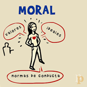
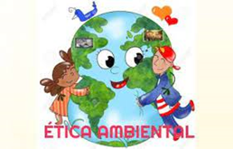
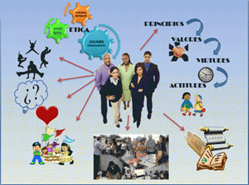

|
UNA CONVIVENCIA ARMÓNICA TRAE CONSIGO COSAS BUENAS, Y ES ALGO QUE TODOS PODEMOS TENER | |
FILOSOFÍA |
| La ética: Es una rama de la filosofía la cual estudia el comportamiento humano y su relación con las nociones del bien y del mal, los preceptos morales, el deber, la felicidad y el bienestar común. |
La moral: Es un conjunto de normas, valores y creencias existentes y aceptadas en una sociedad que sirven de modelo de conducta y valoración para establecer lo que está bien o está mal. |
|  |
La ética ambiental: Reflexiona sobre los fundamentos de los deberes y responsabilidades del ser humano con la naturaleza, los seres vivos. |
|  |
La ética profesional: Consiste en un conjunto de normas y valores que rigen el actuar de los trabajadores en una organización donde se basan principalmente los valores universales que poseen los seres humanos aplicados directamente en el entorno laboral. |
|  |
| ¿Cómo se relaciona la ética con la convivencia armónica? |
| La ética estudia el comportamiento moral el cual nos ayuda a convivir con las demás personas, además que nos ayuda a distinguir el bien del mal lo cual traería grandes beneficios a la convivencia armónica, y de esta manera todos estaríamos en paz, y libres de situaciones indeseables |
Puedes realizar la actividad educativa con el tema de la ética a continuación:
|
|
Autores: Angel Pastaz, Melany Guaytarilla, Juan Mejía, Damaris Tulcanaza 2020 - 2021 2do Bachillerato Técnico Informático Unidad Educativa Municipal Técnica y en Ciencias "San Francisco de Quito" |
|